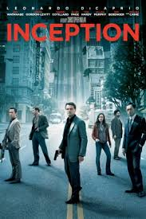
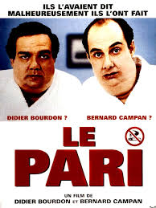
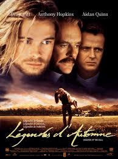

After 6 years in the corportate world,
I have decided to get my freedom back !
My goal: become my own boss in a sector I am passionate with.
|  |
InceptionDom Cobb est un voleur expérimenté – le meilleur qui soit dans l’art périlleux de l’extraction : sa spécialité consiste à s’approprier les secrets les plus précieux d’un individu, enfouis au plus profond de son subconscient, pendant qu’il rêve et que son esprit est particulièrement vulnérable. Très recherché pour ses talents dans l’univers trouble de l’espionnage industriel, Cobb est aussi devenu un fugitif traqué dans le monde entier qui a perdu tout ce qui lui est cher. Mais une ultime mission pourrait lui permettre de retrouver sa vie d’avant – à condition qu’il puisse accomplir l’impossible : l’inception. Au lieu de subtiliser un rêve, Cobb et son équipe doivent faire l’inverse : implanter une idée dans l’esprit d’un individu. S’ils y parviennent, il pourrait s’agir du crime parfait. Et pourtant, aussi méthodiques et doués soient-ils, rien n’aurait pu préparer Cobb et ses partenaires à un ennemi redoutable qui semble avoir systématiquement un coup d’avance sur eux. Un ennemi dont seul Cobb aurait pu soupçonner l’existence. |
|  |
Le PariBernard est professeur dans une banlieue et vit avec Victoria. Didier est un riche pharmacien du XIXe arrondissement de Paris, marié à Murielle, la soeur de Victoria. Tout oppose les deux beaux-freres et ils se détestent. Lors d'un repas chez les parents de leurs femmes respectives, ils font le pari d'arrêter de fumer pendant quinze jours, c'est-à-dire jusqu'à la prochaine réunion de famille. |
|  |
Légendes d'AutomneAu cœur des contrées sauvages du Montana, trois frères, Alfred, Tristan et Samuel sont élevés par leur père, le colonel William Ludlow et ses amis indiens. Un jour, Samuel, le plus fragile, présente sa ravissante fiancée, Susannah à sa famille. Les trois jeunes hommes s’engagent dans la première Guerre Mondiale et Samuel décède sur le champ de bataille. A leur retour, Tristan et Alfred se battent pour conquérir le cœur de la belle veuve. |